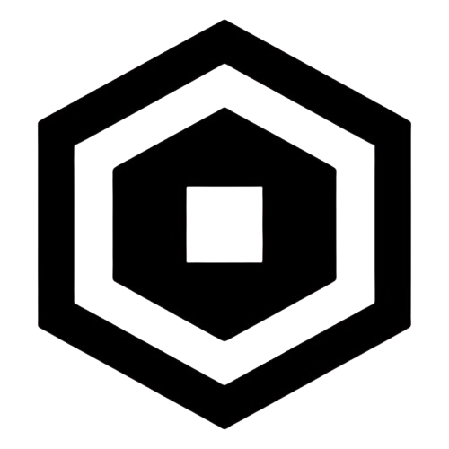
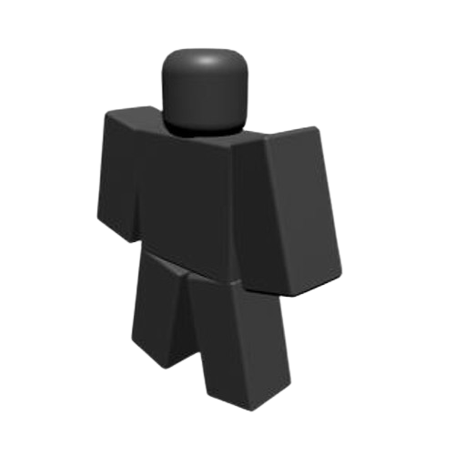
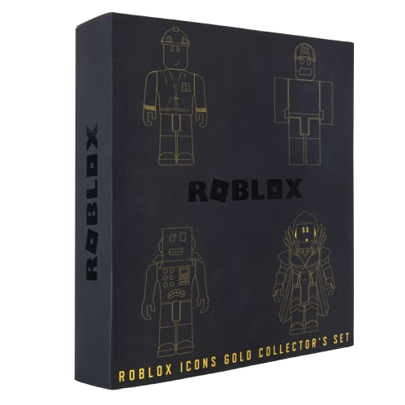
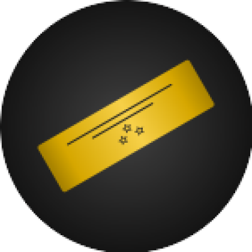
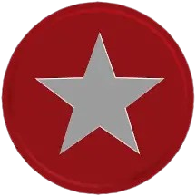
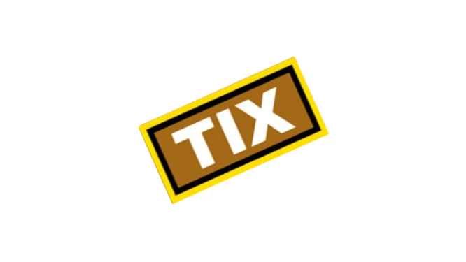
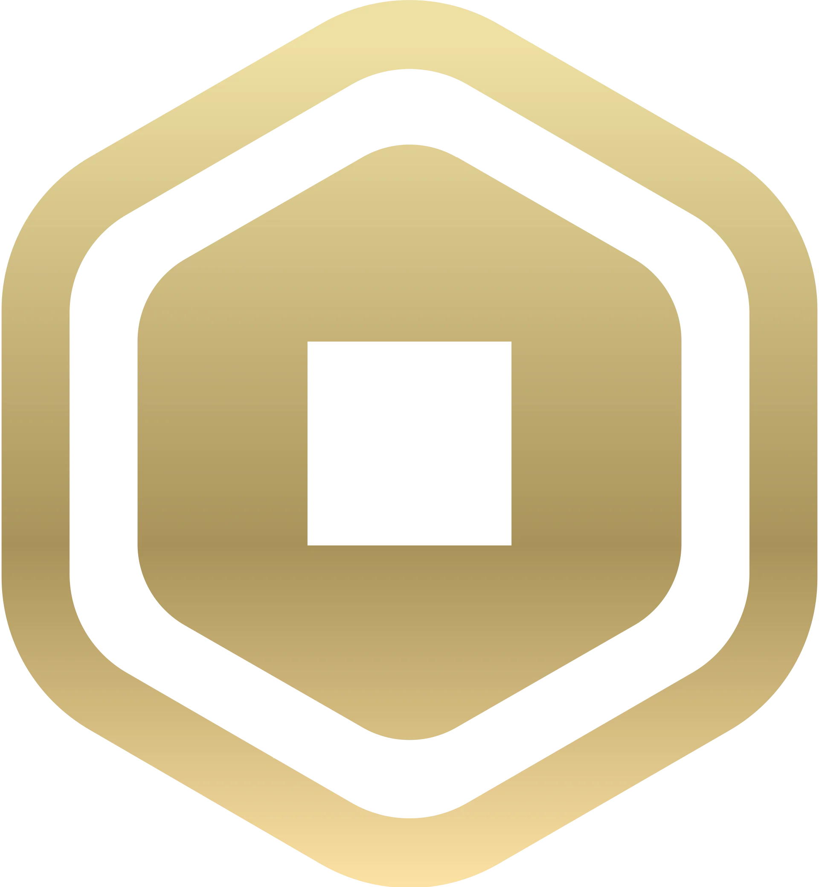

Robux
La moneda virtual de Roblox. Se compra en paquetes (por ejemplo, 400, 800, 1.700 o 4.500 Robux) y se usa para comprar accesorios, pases de juego y objetos de la Avatar Shop.
Comprar RobuxLas principales formas en que se mueve el dinero dentro de la plataforma y cómo fue cambiando su moneda a lo largo del tiempo.

La moneda virtual de Roblox. Se compra en paquetes (por ejemplo, 400, 800, 1.700 o 4.500 Robux) y se usa para comprar accesorios, pases de juego y objetos de la Avatar Shop.
Comprar RobuxUna suscripción mensual que otorga una entrega periódica de Robux, un porcentaje extra al vender objetos y acceso al mercado de reventa entre usuarios.
Ver Premium
El catálogo de ropa, accesorios y objetos UGC creados por Roblox y por la propia comunidad, para personalizar el avatar de cada usuario.
Ir a la Avatar Shop
Múltiples compañías suelen vender mercancía que puede estar o no relacionada con la empresa o con algún juego de la plataforma.
Ver mercancía
Elementos disponibles en diversos juegos de Roblox. Suelen brindar beneficios o ventajas en juego. Navega por los juegos y observa si hay alguno disponible.
Ver juegos populares
Etapa 1
Cuando Roblox comenzó, todavía no existía la economía que conocemos actualmente. Originalmente había un sistema de Roblox Points, que se obtenían principalmente mediante la actividad dentro de la plataforma.
Los PLAYER Points, abreviados PP, fueron el primer sistema de moneda/puntos de Roblox y existían incluso antes del lanzamiento oficial. Durante los primeros años de desarrollo, los jugadores podían acumularlos como una forma de demostrar su actividad y sus logros dentro de la plataforma.
Funcionaban más como un sistema de reconocimiento que como una moneda comercial moderna: Roblox estaba más enfocada en jugar, crear y experimentar que en tener una economía virtual.

Etapa 2
Los Tickets, conocidos popularmente como Tix, fueron la segunda gran moneda de Roblox y coexistieron con los Robux durante casi nueve años. Roblox necesitaba una forma de que los usuarios que no pagaban pudieran participar en su economía, y por eso aparecieron.
Los miembros del Builders Club recibían diferentes beneficios, entre ellos una cantidad diaria de Robux. Esto creó una diferencia cada vez mayor entre los usuarios gratuitos y los que pagaban una membresía.
Como podían conseguirse gratis de muchas maneras, era posible acumular grandes cantidades mediante:
Esto podía introducir grandes cantidades de moneda en la economía sin que existiera necesariamente una actividad económica equivalente.
Además, Roblox quería simplificar su economía. En marzo de 2016 anunció que los Tix serían eliminados.

Etapa 3
Cuando aparecieron en 2007, los Robux estaban principalmente relacionados con la personalización del avatar y la economía de la plataforma: los usuarios podían usarlos para comprar determinados objetos.
Poco después, Roblox amplió sus usos. Desde alrededor de 2008, también servían para promocionar juegos y personalizar los Places.
Con el crecimiento de la plataforma, se usaron cada vez más para comprar objetos virtuales que permitían personalizar los avatares y diferenciarse de otros usuarios.
Cuando Roblox permitió que los propios usuarios crearan y vendieran contenido, los Robux dejaron de ser solo una moneda de jugadores y pasaron a formar parte de una economía de creadores.